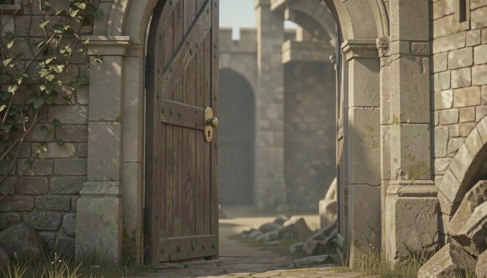

Название проекта
Проект посвящён созданию 2D-платформера на языке C++ с использованием библиотеки GameLib.h. В рамках работы был разработан игровой цикл, система управления персонажем, гравитация, прыжки, обнаружение столкновений и сбор предметов. Ключевой особенностью является модификация — система временных бонусов (ускорение), усложняющая геймплей. Проект сопровождается техническим руководством, видео-демонстрацией и размещён в открытом Git-репозитории.
